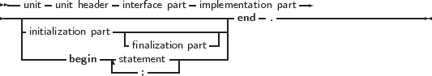
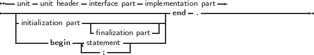

_________________________________________________________________________________________________________
Units


___________________________________________________________________
A unit contains a set of declarations, procedures and functions that can be used by a program or another unit. The syntax for a unit is as follows:
_________________________________________________________________________________________________________
Units

___________________________________________________________________
As can be seen from the syntax diagram, a unit always consists of a interface and an implementation part. Optionally, there is an initialization block and a finalization block, containing code that will be executed when the program is started, and when the program stops, respectively.
Both the interface part or implementation part can be empty, but the keywords Interface and implementation must be specified. The following is a completely valid unit;
The interface part declares all identifiers that must be exported from the unit. This can be constant, type or variable identifiers, and also procedure or function identifier declarations. The interface part cannot contain code that is executed: only declarations are allowed. The following is a valid interface part:
The type SomeBType is defined in unit b.
All functions and methods that are declared in the interface part must be implemented in the implementation part of the unit, except for declarations of external functions or procedures. If a declared method or function is not implemented in the implementation part, the compiler will give an error, for example the following:
Will result in the following error:
The implementation part is primarily intended for the implementation of the functions and procedures declared in the interface part. However, it can also contain declarations of it’s own: the declarations inside the implementation part are not accessible outside the unit.
The initialization and finalization part of a unit are optional.
The initialization block is used to initialize certain variables or execute code that is necessary for the correct functioning of the unit. The initialization parts of the units are executed in the order that the compiler loaded the units when compiling a program. They are executed before the first statement of the program is executed.
The finalization part of the units are executed in the reverse order of the initialization execution. They are used for instance to clean up any resources allocated in the initialization part of the unit, or during the lifetime of the program. The finalization part is always executed in the case of a normal program termination: whether it is because the final end is reached in the program code or because a Halt instruction was executed somewhere.
In case the program stops during the execution of the initialization blocks of one of the units, only the units that were already initialized will be finalized. Note that in difference with Delphi, in Free Pascal a finalization block can be present without an Initialization block. That means the following will compile in Free Pascal, but not in Delphi.
An initialization section by itself (i.e. without finalization) may simply be replaced by a statement block. That is, the following:
is completely equivalent to